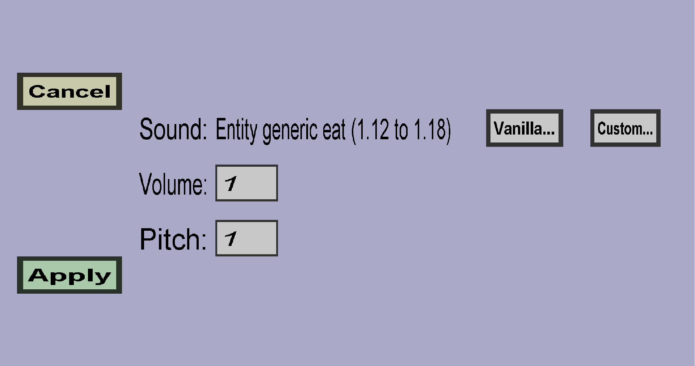

The sound edit menu can be used to edit a sound. A sound can use either a vanilla minecraft sound type or a custom sound type, and has an associated volume and pitch. This menu should look like this:
The currently selected sound type is shown in the middle, in this case Entity generic eat. You can use the Vanilla... button to choose (another) vanilla minecraft sound and you can use the Custom... button to choose a custom sound type instead. Note: before you can choose a custom sound type, you need to add one via Edit menu -> Sounds -> Add sound.
The volume determines how loud the sound will be. Doubling the volume will make the sound twice as loud. (That having said, the minecraft client will probably stop increasing the volume if you give it a ridiculous value like 1000.) For reference, the volume of a jukebox is 4.
The pitch of the sound. Personally, I have never tried anything other than 1, but you're free to try it yourself.